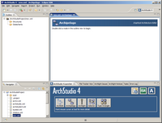
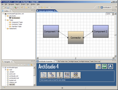
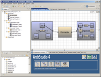
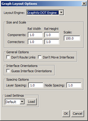
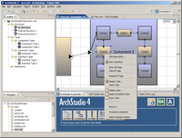

Archipelago is ArchStudio's user-friendly graphical editor. It consists of a set of functional plug-ins that provide depiction and editing support for various xADL modules. Archipelago's primary function is as a graphical, "boxes-and-arrows" style editor for xADL 2.0 documents. The user interface is similar to those found in tools like Rational Rose, Microsoft Visio, and Microsoft PowerPoint. Unlike some of these editors, Archipelago is cognizant of the underlying modeling language (xADL 2.0) and changes to Archipelago diagrams are immediately reflected in the underlying open xADL document (and vice-versa).
Archipelago can be opened from the ArchStudio Launcher like any other ArchStudio editor.
Once the editor is opened, it primarily uses a modeless, context-based user interface. This means that instead of using toolbars, editing modes, and the main menu, the primary method of editing is through context menus. Context menus are generally brought up by right-clicking on the element to be edited. Systems with only one mouse button (e.g., the Macintosh) can access context menus by holding a modifier key (usually Control) and clicking on an element).
In general, editing in Archipelago starts from the tree in the Outline View. Right-clicking on these elements will allow you to manipulate top-level, 'container' elements in a xADL document such as structures, types, statecharts, and so on. In general, double-clicking on one of these container elements will open the element in the editor pane.
The editor pane will usually be a graphical editing canvas. In a new container element, the canvas may be empty, in which case right-clicking on the blank canvas will present options for creating new elements.
Graphical editing canvases generally support arbitrary zooming and scrolling. Scrolling can be done with the scrollbars, and zooming can be done with the Zoom dropdown box in the upper-right corner of the canvas. However, a more intuitive scrolling and zooming system exists for users that have mice with scroll wheels. Turning the scroll wheel up (away from you) will zoom in; turning the scroll wheel down (toward you) will zoom out. Pressing the scroll wheel down (as a mouse button) will cause the cursor to change to the 'hand' cursor. While the scroll button is depressed, moving the mouse will cause the canvas to scroll along with the movement of the mouse, like putting your hand down on a piece of paper and moving the paper. The combination of zooming and scrolling with a wheel mouse is much faster and more intuitive than the scrollbars/dropdown zoom box in Archipelago, and we recommend that all Archipelago users invest in wheel mice to take advantage of this.
Some example screenshots of Archipelago are shown here, to illustrate some of its capabilities.
|  | This shows Archipelago opened on a new, empty document. Right-clicking on the various nodes in the outline view will allow new container nodes (structures, types, and so on) to be created. |
|  | This shows a simple, one-level structure created in Archipelago. Two components are connected via an intervening connector. |
| This shows a more complex, hierarchical structure. The two components now have internal structures that show how they are constructed internally. | |
|  | This structure shows the above hierarchical structure, but end-to-end mappings have been added to show how the internal structures interact through interfaces on the outer structure. |
|  | This shows the Archipelago auto-layout dialog; Archipelago uses the freely-available Graphviz layout engines to lay out architectural structures. |
|  | In ArchStudio 4, Archipelago fully supports hierarchical editing. This means that inner architectures can be edited in an enclosing diagram, without having to "drill down" to the diagram containing only the inner architecture. |
Additional questions about Archipelago should be sent to Eric M. Dashofy.
{kind=link}
{kind=link}
{kind=link}
{kind=link}
{kind=link}
{kind=link}